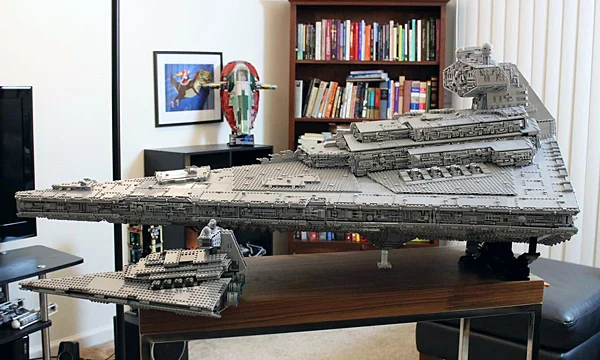

La empresa o marca de Lego fue fundada el 10 de agosto de 1932 por Ole Kirk Christiansen, un carpintero de Dinamarca.
Si bien al principio se fundo para vender articulos de madera, desde 1949 está especializada en juguetes de plástico.
Se dice que el nombre Lego deriva de las palabras danesas «leg godt», que significan «jugar bien». En 2015, la empresa, que mantiene su sede social en Billund, se convirtió en la compañía juguetera con mayor volumen de negocio en el mundo gracias a ventas de 2100 millones de dólares estadounidenses
Cuando ese negocio se vio afectado por la Gran Depresión, empezó a fabricar muebles de menor tamaño y desde 1932 se dedicó en exclusiva a los juguetes de madera.
Dos años más tarde renombró la nueva empresa como «Lego», un acrónimo del término danés leg godt («jugar bien»)
y la marca se hizo muy popular entre la población local porque los juguetes de madera eran más accesibles que los importados de metal y más difíciles de adquirir durante la Segunda Guerra Mundial.
Sagas de lego a buscar
Lego Star Wars
La saga de lego Star Wars es de las más exitosas de LEGO, por lo que han ido sacando a lo largo de los años miles de recreaciones a escenas, personajes, estructuras, eventos, etc.. que aparecen en sus películas y series.
Las figuras de LEGO son una colección de sets y minifiguras que combinan el icónico diseño de LEGO con los personajes y naves del universo de Star Wars. Desde el lanzamiento inicial de la línea en 1999, LEGO ha creado una gran variedad de productos que permiten a los fans construir modelos detallados de naves, vehículos, escenas y personajes de las películas de Star Wars.
Aqui os mostrare una las figuras más iconicas de la decada de los 2000:
10018: Darth Maul
Este temido Sith, conocido por su apariencia imponente y su doble sable de luz, es uno de los villanos más emblemáticos de la saga Star Wars. Con su rostro marcado por tatuajes rojos y negros, y su habilidad excepcional en combate, Darth Maul dejó una huella imborrable en La Amenaza Fantasma.
10030: Destructor estelar imperial
El impresionante Destructor Estelar Imperial de LEGO Star Wars, este modelo detallado, inspirado en uno de los vehículos más emblemáticos de Star Wars, captura la majestuosa presencia y el poder militar de la nave más temida del Imperio Galáctico.

10134: Ala-Y Attack Starfighter
Este set, que captura la esencia del icónico caza estelar utilizado por los Rebeldes en Star Wars: Episodio IV - Una nueva esperanza, te permite construir una réplica altamente detallada de una de las naves más resistentes en la flota rebelde.
10188: Estrella de la muerte
El Set 10188 de LEGO captura a la perfección el diseño masivo y detallado de la Estrella de la Muerte, con su estructura esférica, torretas de bláster y los diferentes niveles interiores. Además de la nave en sí, el set incluye una serie de minifiguras que te permitirán recrear las icónicas escenas de la película, desde los enfrentamientos con los rebeldes hasta las batallas entre los personajes más importantes de la saga.
10179: Halcon milenario edicion ultimate de coleccionista
El set 10179 es un homenaje épico a la nave más famosa de la galaxia, el Halcón Milenario, que te permitirá construir una de las réplicas más detalladas y complejas jamás creadas en LEGO. Con más de 5,000 piezas, este modelo de coleccionista es una obra maestra de ingeniería y diseño que lleva la construcción de LEGO a un nivel completamente nuevo.
Lego Harry Potter
Esta fantástica colección de sets de construcción te permite revivir las historias más icónicas de la saga del joven mago, desde su llegada a Hogwarts hasta sus enfrentamientos con el temido Lord Voldemort. Con figuras detalladas, escenarios emblemáticos y hechizos encantadores, LEGO Harry Potter te invita a vivir la magia de Harry Potter como nunca antes, todo en bloques de LEGO.
Los sets de LEGO Harry Potter abarcan una amplia variedad de escenas y lugares que los fanáticos de la saga reconocerán al instante. Podrás construir Hogwarts, el Expreso de Hogwarts, la Cabaña de Hagrid, el Bosque Prohibido, y muchos otros lugares emblemáticos del mundo de la magia. Además, los sets incluyen minifiguras de los personajes más queridos como Harry, Hermione, Ron, Dumbledore, Snape, y, por supuesto, los temibles Death Eaters y Voldemort.
Los más recordados de la decada de los 2000:
4707: La cabaña de Hagrid
la Casa de Hagrid de LEGO, una recreación mágica y detallada del icónico hogar del querido guardabosques de Hogwarts. Este set te permitirá construir la cabaña de Hagrid con asombrosos detalles, desde el techo de paja hasta las enormes puertas, capturando la esencia del hogar rústico que aparece en las películas de Harry Potter.